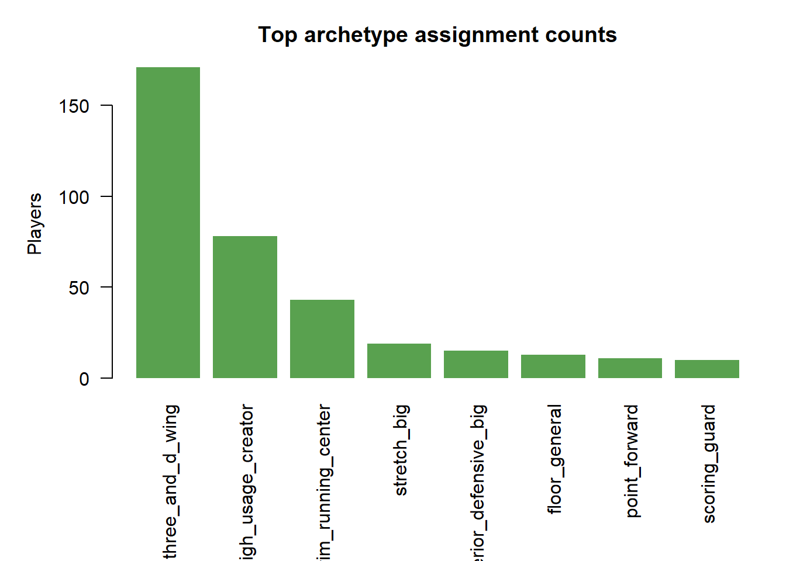
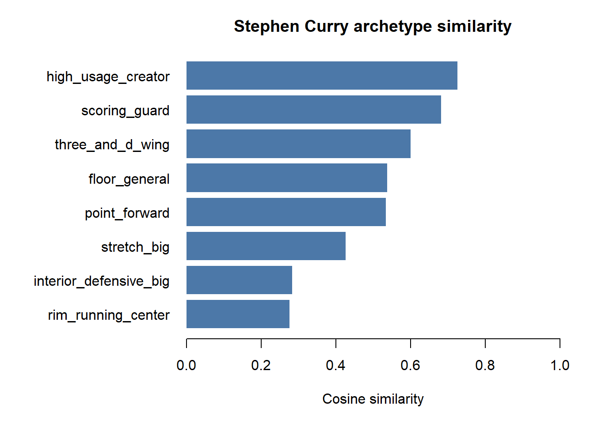
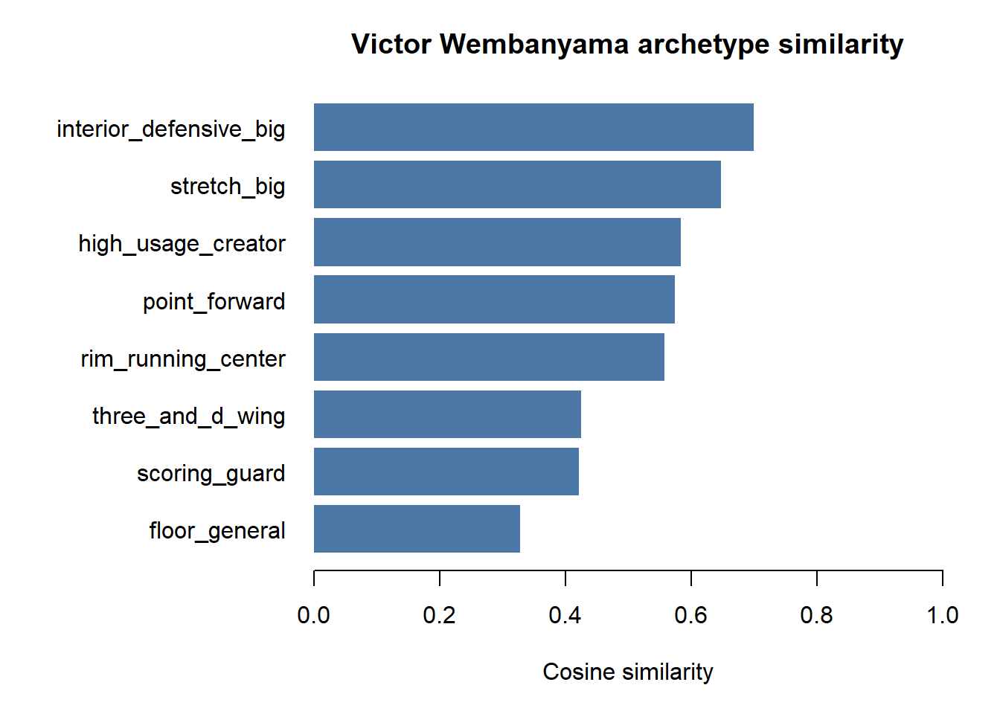
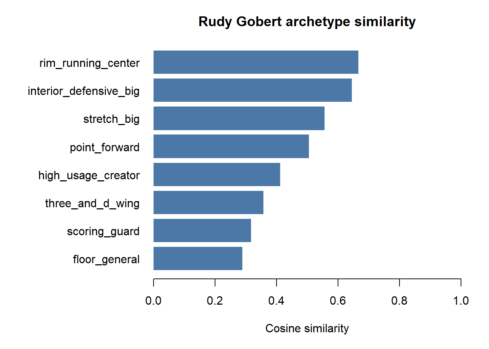
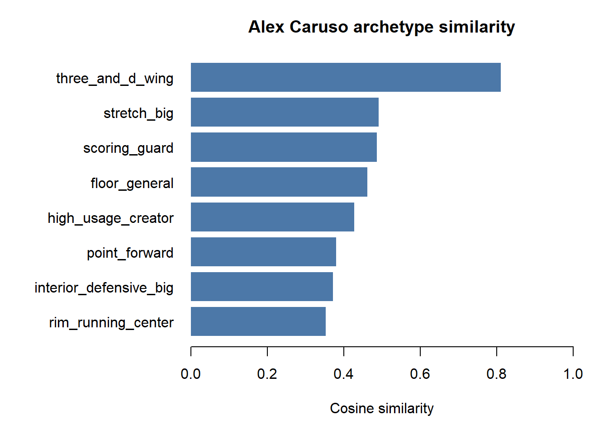

| output | rows | columns |
|---|---|---|
| player-season features | 360 | 25 |
| normalized fingerprints | 360 | 21 |
| nearest-neighbor rows | 1800 | 10 |
| position score rows | 1080 | 9 |
| archetype score rows | 2880 | 7 |
| archetype explanation rows | 360 | 9 |
NBA Player Fingerprints
Player-season similarity, archetypes, and explainability
Overview
This report summarizes the first player-season fingerprint pipeline. The current version uses public NBA box-score totals, builds normalized player fingerprints, and compares those fingerprints to other players, broad listed positions, and manually defined playing-style archetypes.
Archetype Matches
The archetype layer uses transparent feature weights over the normalized fingerprint columns. These labels are not treated as ground truth. They are reference profiles that make player style easier to inspect.
| player_name | team_abbreviation | archetype | cosine_similarity | |
|---|---|---|---|---|
| 2057 | Matisse Thybulle | POR | three_and_d_wing | 0.9024421 |
| 369 | Cam Reddish | LAL | three_and_d_wing | 0.8766209 |
| 2401 | Quentin Grimes | DET | three_and_d_wing | 0.8644847 |
| 905 | Evan Fournier | DET | three_and_d_wing | 0.8507749 |
| 2777 | Tyus Jones | WAS | floor_general | 0.8481926 |
| 953 | Gary Harris | ORL | three_and_d_wing | 0.8448868 |
| 681 | De’Anthony Melton | PHI | three_and_d_wing | 0.8400978 |
| 2673 | Trae Young | ATL | high_usage_creator | 0.8312986 |
| 649 | Davis Bertans | CHA | three_and_d_wing | 0.8271186 |
| 1185 | Jae Crowder | MIL | three_and_d_wing | 0.8214642 |
| 345 | Cade Cunningham | DET | high_usage_creator | 0.8174490 |
| 897 | Eric Gordon | PHX | three_and_d_wing | 0.8165378 |
| 1553 | Jose Alvarado | NOP | three_and_d_wing | 0.8155429 |
| 969 | Gary Trent Jr. | TOR | three_and_d_wing | 0.8126525 |
| 825 | Donte DiVincenzo | NYK | three_and_d_wing | 0.8124449 |
| 1721 | Kentavious Caldwell-Pope | DEN | three_and_d_wing | 0.8120036 |
| 57 | Alex Caruso | CHI | three_and_d_wing | 0.8106921 |
| 1817 | Kris Murray | POR | three_and_d_wing | 0.8079078 |
| 1417 | Jevon Carter | CHI | three_and_d_wing | 0.8072854 |
| 1505 | Jordan Clarkson | UTA | high_usage_creator | 0.8066930 |

Featured Profiles
### Stephen Curry
| | archetype_rank|archetype | cosine_similarity|
|:----|--------------:|:----------------------|-----------------:|
|2585 | 1|high_usage_creator | 0.7257417|
|2586 | 2|scoring_guard | 0.6824090|
|2587 | 3|three_and_d_wing | 0.6002996|
|2588 | 4|floor_general | 0.5375538|
|2589 | 5|point_forward | 0.5341264|
|2590 | 6|stretch_big | 0.4266023|
|2591 | 7|interior_defensive_big | 0.2826265|
|2592 | 8|rim_running_center | 0.2763672|
| |archetype |supporting_features |gap_features |
|:---|:------------------|:-------------------------------------------------------------------|:------------------------------------------------------------------------|
|324 |high_usage_creator |points_per_36=0.743; turnovers_per_36=0.657; minutes_per_game=0.600 |assists_per_36=0.377; free_throw_attempt_rate=0.345; points_per_36=0.257 |
### Victor Wembanyama
| | archetype_rank|archetype | cosine_similarity|
|:----|--------------:|:----------------------|-----------------:|
|2793 | 1|interior_defensive_big | 0.6997067|
|2794 | 2|stretch_big | 0.6475304|
|2795 | 3|high_usage_creator | 0.5842672|
|2796 | 4|point_forward | 0.5746646|
|2797 | 5|rim_running_center | 0.5572156|
|2798 | 6|three_and_d_wing | 0.4251904|
|2799 | 7|scoring_guard | 0.4212690|
|2800 | 8|floor_general | 0.3283909|
| |archetype |supporting_features |gap_features |
|:---|:----------------------|:---------------------------------------------------------------------------|:--------------------------------------------------------------------------|
|350 |interior_defensive_big |blocks_per_36=1.000; defensive_rebounds_per_36=0.836; rebounds_per_36=0.643 |minutes_per_game=0.307; personal_fouls_per_36=0.187; rebounds_per_36=0.157 |
### Rudy Gobert
| | archetype_rank|archetype | cosine_similarity|
|:----|--------------:|:----------------------|-----------------:|
|2449 | 1|rim_running_center | 0.6665604|
|2450 | 2|interior_defensive_big | 0.6446614|
|2451 | 3|stretch_big | 0.5569705|
|2452 | 4|point_forward | 0.5051173|
|2453 | 5|high_usage_creator | 0.4120177|
|2454 | 6|three_and_d_wing | 0.3581250|
|2455 | 7|scoring_guard | 0.3178854|
|2456 | 8|floor_general | 0.2887401|
| |archetype |supporting_features |gap_features |
|:---|:------------------|:-------------------------------------------------------------------------------|:---------------------------------------------------------------------------|
|307 |rim_running_center |true_shooting_pct=0.800; rebounds_per_36=0.687; offensive_rebounds_per_36=0.543 |offensive_rebounds_per_36=0.357; rebounds_per_36=0.313; blocks_per_36=0.288 |
### Alex Caruso
| | archetype_rank|archetype | cosine_similarity|
|:--|--------------:|:----------------------|-----------------:|
|57 | 1|three_and_d_wing | 0.8106921|
|58 | 2|stretch_big | 0.4912072|
|59 | 3|scoring_guard | 0.4869490|
|60 | 4|floor_general | 0.4621125|
|61 | 5|high_usage_creator | 0.4271244|
|62 | 6|point_forward | 0.3800514|
|63 | 7|interior_defensive_big | 0.3717457|
|64 | 8|rim_running_center | 0.3527731|
| |archetype |supporting_features |gap_features |
|:--|:----------------|:---------------------------------------------------------------------------|:------------------------------------------------------------------------------------|
|8 |three_and_d_wing |steals_per_36=0.736; three_point_attempt_rate=0.657; minutes_per_game=0.600 |three_point_attempt_rate=0.343; true_shooting_pct=0.120; personal_fouls_per_36=0.118 |
Nearest Neighbors
Nearest neighbors compare each player-season fingerprint to every other player-season fingerprint with cosine similarity.
| player_name | neighbor_rank | neighbor_player_name | neighbor_team_abbreviation | cosine_similarity | |
|---|---|---|---|---|---|
| 1616 | Stephen Curry | 1 | Anfernee Simons | POR | 0.9828922 |
| 1617 | Stephen Curry | 2 | Tyler Herro | MIA | 0.9815005 |
| 1618 | Stephen Curry | 3 | Desmond Bane | MEM | 0.9789526 |
| 1619 | Stephen Curry | 4 | Jalen Green | HOU | 0.9782045 |
| 1620 | Stephen Curry | 5 | Bojan Bogdanovic | NYK | 0.9767436 |
| 1746 | Victor Wembanyama | 1 | Joel Embiid | PHI | 0.9322175 |
| 1747 | Victor Wembanyama | 2 | Anthony Davis | LAL | 0.9223483 |
| 1748 | Victor Wembanyama | 3 | Chet Holmgren | OKC | 0.9216489 |
| 1749 | Victor Wembanyama | 4 | Scottie Barnes | TOR | 0.9165480 |
| 1750 | Victor Wembanyama | 5 | Josh Giddey | OKC | 0.9061440 |
| 1531 | Rudy Gobert | 1 | Nic Claxton | BKN | 0.9839970 |
| 1532 | Rudy Gobert | 2 | Ivica Zubac | LAC | 0.9762009 |
| 1533 | Rudy Gobert | 3 | Nick Richards | CHA | 0.9759838 |
| 1534 | Rudy Gobert | 4 | Jarrett Allen | CLE | 0.9744004 |
| 1535 | Rudy Gobert | 5 | Mark Williams | CHA | 0.9672718 |
| 36 | Alex Caruso | 1 | Jalen Suggs | ORL | 0.9827188 |
| 37 | Alex Caruso | 2 | Herbert Jones | NOP | 0.9782129 |
| 38 | Alex Caruso | 3 | Donte DiVincenzo | NYK | 0.9721481 |
| 39 | Alex Caruso | 4 | De’Anthony Melton | PHI | 0.9707762 |
| 40 | Alex Caruso | 5 | Nickeil Alexander-Walker | MIN | 0.9691874 |
Position References
NBA public metadata currently exposes broad listed positions such as G, F, and C. These are useful anchors, but the archetype layer carries the richer basketball role language.
| reference_position | players |
|---|---|
| G | 181 |
| F | 112 |
| C | 67 |
Notes
The current fingerprints are box-score-only. The next data improvements should add advanced stats such as usage rate, assist rate, rebound rates, and pace/context indicators. Play-type features like isolation, pick-and-roll, handoff, catch-and-shoot, and rim running would make the archetypes more basketball-specific once a stable public source is available.